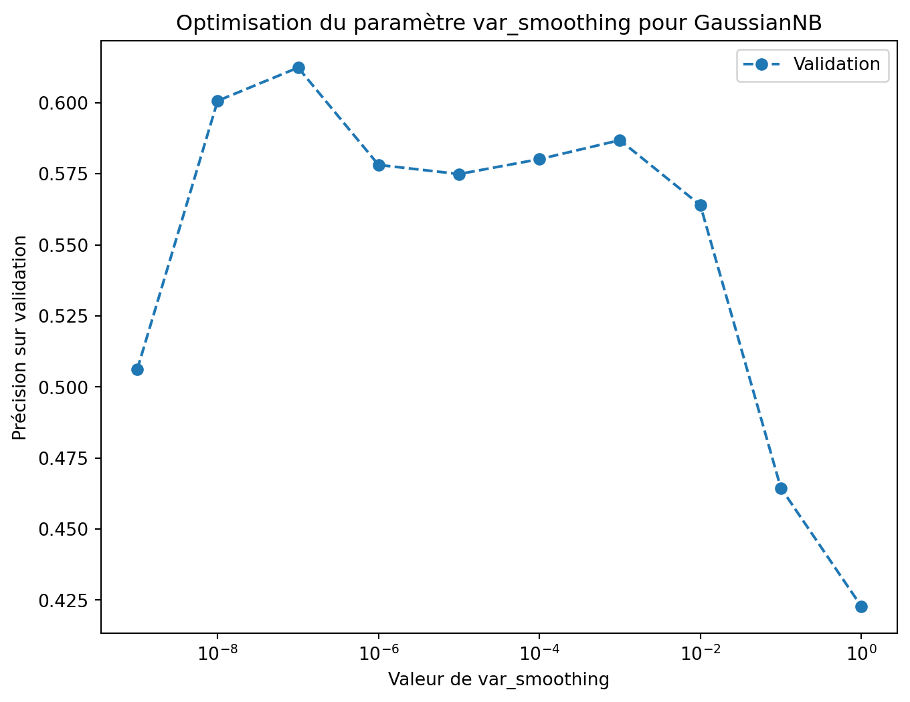

import pandas as pd
import numpy as np
import matplotlib.pyplot as plt
from sklearn.naive_bayes import GaussianNB
from sklearn.metrics import confusion_matrix, accuracy_score
import warnings
# 🔇 Suppression des avertissements inutiles
warnings.filterwarnings("ignore", category=UserWarning)
# 🔄 Chargement des ensembles de données
train_data = pd.read_csv('covertype_train.csv')
val_data = pd.read_csv('covertype_val.csv')
test_data = pd.read_csv('covertype_test.csv')
# 📊 Préparation des données
X_train, y_train = train_data.drop('Cover_Type', axis=1), train_data['Cover_Type']
X_val, y_val = val_data.drop('Cover_Type', axis=1), val_data['Cover_Type']
X_test, y_test = test_data.drop('Cover_Type', axis=1), test_data['Cover_Type']
# 🎯 Recherche du meilleur hyperparamètre var_smoothing
var_smoothing_values = np.logspace(-9, 0, 10)
val_accuracies = []
for smoothing in var_smoothing_values:
gnb = GaussianNB(var_smoothing=smoothing)
gnb.fit(X_train, y_train)
acc = accuracy_score(y_val, gnb.predict(X_val))
val_accuracies.append((smoothing, acc))
# Sélection du meilleur hyperparamètre
best_smoothing, best_val_acc = max(val_accuracies, key=lambda x: x[1])
# 📈 Affichage du graphique
plt.figure(figsize=(8, 6))
plt.plot(var_smoothing_values, [acc for smoothing, acc in val_accuracies], marker='o', linestyle='dashed', label="Validation")
plt.xscale('log')
plt.xlabel("Valeur de var_smoothing")
plt.ylabel("Précision sur validation")
plt.title("Optimisation du paramètre var_smoothing pour GaussianNB")
plt.legend()
plt.show()
# 🏆 Modèle final avec le meilleur hyperparamètre
final_model = GaussianNB(var_smoothing=best_smoothing)
final_model.fit(X_train, y_train)
y_test_pred = final_model.predict(X_test)
# 📊 Matrice de confusion
conf_matrix = confusion_matrix(y_test, y_test_pred)
# 📈 Calcul des taux de bien classés par classe
class_accuracies = conf_matrix.diagonal() / conf_matrix.sum(axis=1)
overall_test_accuracy = accuracy_score(y_test, y_test_pred)
# 📝 Affichage des résultats
print(f"\n🔹 Meilleur var_smoothing sur l'échantillon de validation : {best_smoothing:.1e}")
print(f"Taux de bien classés sur l'échantillon de validation avec cet hyperparamètre : {best_val_acc:.2%}")
print("\n📊 Matrice de confusion sur l'échantillon de test, avec le meilleur hyperparamètre :")
print(conf_matrix)
print("\n📈 Taux de bien classés par classe sur l'échantillon de test, avec le meilleur hyperparamètre :")
for i, acc in enumerate(class_accuracies, start=1):
print(f"Classe {i} : {acc:.2%}")
print(f"\n🔹 Taux de bien classés sur l'échantillon de test avec le meilleur hyperparamètre : {overall_test_accuracy:.2%}")
🔹 Meilleur var_smoothing sur l'échantillon de validation : 1.0e-07
Taux de bien classés sur l'échantillon de validation avec cet hyperparamètre : 61.23%
📊 Matrice de confusion sur l'échantillon de test, avec le meilleur hyperparamètre :
[[1300 475 12 0 57 9 266]
[ 615 1732 101 1 222 89 73]
[ 0 72 939 151 72 196 0]
[ 0 0 33 66 0 11 0]
[ 2 179 4 0 176 19 0]
[ 0 66 271 34 12 311 0]
[ 162 2 3 0 3 0 651]]
📈 Taux de bien classés par classe sur l'échantillon de test, avec le meilleur hyperparamètre :
Classe 1 : 61.35%
Classe 2 : 61.14%
Classe 3 : 65.66%
Classe 4 : 60.00%
Classe 5 : 46.32%
Classe 6 : 44.81%
Classe 7 : 79.29%
🔹 Taux de bien classés sur l'échantillon de test avec le meilleur hyperparamètre : 61.70%